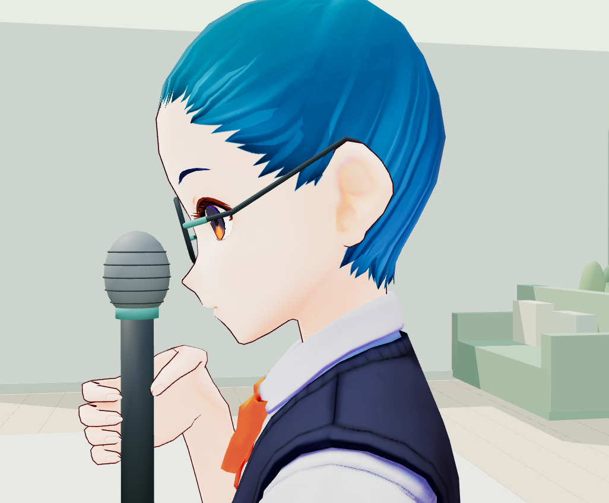
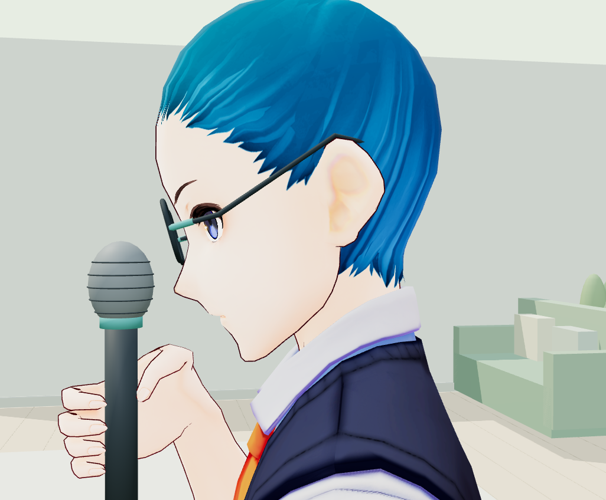

实际男女各一条正常速度、房间镜头站立→坐稳→起身，持续持麦讲话。四姿实际皮肤交叉为零、真实双实例隔离与不支持体型拒绝已检查。镜腿较明显上斜；耳部自然支撑和造型没有通过人工验收。裙装坐姿问题未因本修复解决。
查看同版de62旧新并排影片与近图（不改标为13f） · 本版范围与原始计时

女性侧面

男性侧面
原影片完整保留。工程审查为全时段2fps抽帧和近图，不能代替连续自然度验收。录制初始化跨界长间隔和运行中间隔分别记录；这些短片不是普通电脑性能基准。